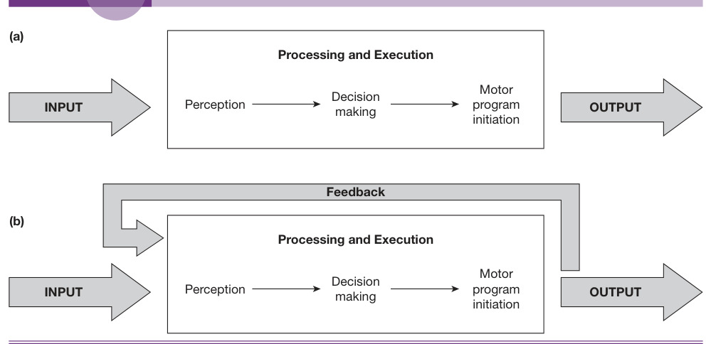
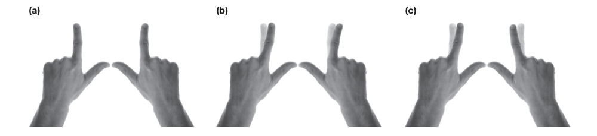
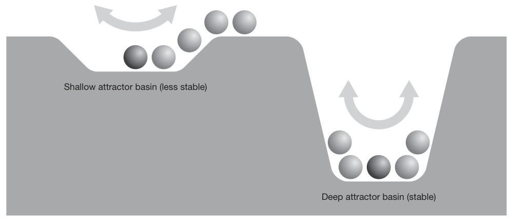
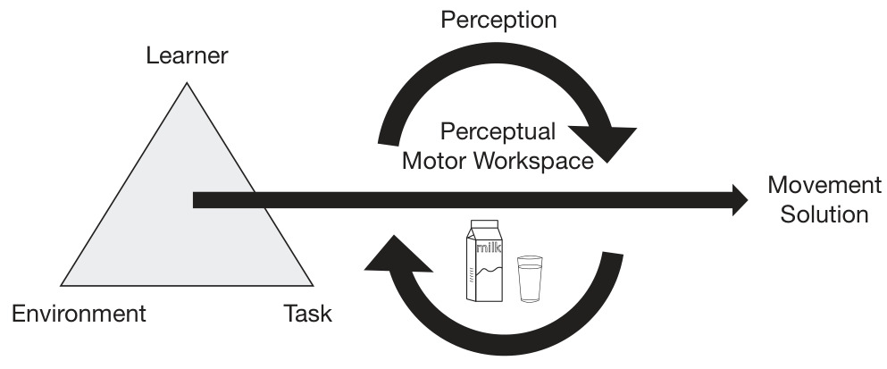

Chương 4 — Các Lý Thuyết Hành Vi Về Kiểm Soát Vận Động
Chúng ta nhìn với sự kinh ngạc khi các vận động viên ưu tú thực hiện những kỳ công phi thường: người nhảy sào dường như hòa thành một với cây sào khi được phóng lên bầu trời, nghệ sĩ trên xà đơn hoàn thành một cú lộn người và được bắt lấy đúng vào khoảnh khắc thích hợp, và người bơi bị cụt chi ở mức trên gối hoàn thành cuộc đua với thời gian kỷ lục. Chúng ta nhìn với sự kinh ngạc không kém vào bệnh nhân mắc bệnh Parkinson, người có thể uống một ngụm nước dù gặp khó khăn khi nâng ly, hay nạn nhân của một vụ tai nạn phải học lại cách đi bộ. Quả thật, cơ thể con người và khả năng thực hiện các vận động đơn giản lẫn phức tạp thực sự làm chúng ta say mê. Cách hệ thống thần kinh tổ chức các cơ bắp để thực hiện các vận động có kỹ năng là một câu đố phức tạp vẫn tiếp tục thách thức các nhà khoa học về vận động.
Trong chương này, chúng ta sẽ xem xét các lý thuyết về tổ chức và thực hiện các vận động có kỹ năng. Hiểu về lý thuyết rất quan trọng đối với người thực hành, vì nó là nền tảng mà trên đó mọi quyết định sư phạm nên được đưa ra. Sau cùng, làm thế nào chúng ta có thể thiết kế và thực hiện hướng dẫn hiệu quả — dù trong lớp học, phòng tập thể dục, công tác huấn luyện, hay các môi trường lâm sàng — nếu chúng ta không hiểu con người học như thế nào?
PHỐI HỢP VÀ KIỂM SOÁT
Cơ thể con người có nhiều khớp, mỗi khớp đều có khả năng vận động theo nhiều hướng khác nhau. Vì vậy, do cấu trúc giải phẫu của mình, cơ thể con người có nhiều thành phần độc lập, hay các bậc tự do, tạo ra vô số khả năng hành động. Để tạo ra một vận động phối hợp cụ thể, tất cả các thành phần độc lập này đều phải được kiểm soát.
Để minh họa khái niệm này, hãy tô đậm từ “phối hợp” trong tiêu đề ở trên. Để hoàn thành nhiệm vụ này, bạn phải bằng cách nào đó thao tác với cây bút dạ quang (hoặc ngón tay nếu dùng máy tính bảng) và tạo ra một cử động chi phù hợp với kích thước và vị trí của từ trên trang giấy. Quá trình tổ chức các bậc tự do sẵn có của một hệ thống (trong trường hợp này là cánh tay và bút dạ quang hay ngón tay của bạn) thành một kiểu vận động hiệu quả nhằm đạt được một mục tiêu cụ thể một cách có hiệu quả được gọi là phối hợp (Turvey, 1990; Sparrow, 1992). Nhưng điều này tự thân nó chưa giải quyết được vấn đề vận động. Điều gì sẽ xảy ra nếu bạn được yêu cầu chỉ tô năm chữ cái đầu tiên, hoặc nếu cây bút dạ quang của bạn sắp hết mực?
Các biến số trong kiểu vận động, chẳng hạn như mức độ dùng lực, nơi bắt đầu và kết thúc, và tốc độ hoàn thành vận động, cũng phải được giải quyết để đạt được mục tiêu của nhiệm vụ. Việc thao tác các biến số trong một vận động nhằm đáp ứng yêu cầu của một tình huống nhất định được gọi là kiểm soát. Vì vậy, thực hiện một vận động có kỹ năng đòi hỏi người học phải phối hợp các bậc tự do sẵn có, đồng thời kiểm soát vận động được tạo ra.
Cách chúng ta phối hợp và kiểm soát các bậc tự do sẵn có để tạo ra một vận động cụ thể được gọi là vấn đề bậc tự do (Bernstein, 1967) — một vấn đề không chỉ làm khó các nhà khoa học về vận động của con người mà còn cả các kỹ sư robot, những người mà công việc phát triển người máy bị giới hạn bởi những khoảng trống trong hiểu biết của chúng ta về vận động con người. Để tìm hiểu thêm về các bậc tự do và để xem một người máy có thể mô phỏng chặt chẽ đến đâu các vận động có mục đích của con người, hãy xem các video tại các trang web bên cạnh.
CÁC BẬC TỰ DO
VẬN ĐỘNG CÓ KỸ NĂNG: TRUNG TÂM CHỈ HUY HAY TƯƠNG TÁC ĐỘNG LỰC?
Xem tại www.youtube.com/watch?feature=endscreen&v=nvoC9h7K3JA&NR=1
ROBOT ASIMO
Xem tại www.youtube.com/watch?v=uUiZ8rZ8wzI
Hiện tại, có hai cách tiếp cận lý thuyết chủ yếu đưa ra lời giải thích về cách các vận động có kỹ năng được phối hợp và kiểm soát. Cách thứ nhất, các lý thuyết chương trình vận động, cho rằng tồn tại một trung tâm chỉ huy trong não bộ, nơi được xem là đưa ra mọi quyết định liên quan đến vận động. Khi một quyết định hành động được đưa ra, một kế hoạch vận động phù hợp được truy xuất từ trí nhớ, và các chỉ thị được gửi tới phần còn lại của cơ thể để thực hiện hành động.
Mặt khác, các lý thuyết tương tác động lực cho rằng một kế hoạch do trung tâm chỉ huy tạo ra không thể giải thích được mọi biến thiên và điều chỉnh trong vận động có kỹ năng; tải trọng lên trí nhớ sẽ quá lớn. Thay vào đó, vận động có kỹ năng là kết quả hay “nảy sinh” từ sự tương tác động lực của vô số biến số trong cơ thể, môi trường và kỹ năng.
CÁC LÝ THUYẾT CHƯƠNG TRÌNH VẬN ĐỘNG
Một chương trình vận động (motor program) là một biểu diễn trừu tượng của một kế hoạch vận động được lưu trữ trong trí nhớ, chứa đựng tất cả các mệnh lệnh vận động cần thiết để thực hiện hành động dự định.
Các Lý Thuyết Ban Đầu
Các lý thuyết chương trình vận động ban đầu đề xuất rằng đối với mỗi vận động cần thực hiện, tồn tại một chương trình vận động riêng biệt được lưu trữ trong trí nhớ. Khi cần một hành động cụ thể, chương trình thích hợp chỉ đơn giản được truy xuất từ trí nhớ và thực hiện. Tuy nhiên, khi ý tưởng về các chương trình vận động được xem xét kỹ hơn, các nhà nghiên cứu đã ghi nhận hai vấn đề cố hữu. Vấn đề thứ nhất liên quan đến lưu trữ. Nếu tồn tại một chương trình vận động cho mỗi vận động và mỗi biến thiên có thể có, trí nhớ của một người sẽ cần một không gian lưu trữ vô hạn. Vấn đề thứ hai nằm ở việc tạo ra các đáp án mới. Nếu một vận động hay một biến thiên của vận động chưa từng được thực hiện trước đây, thì chương trình cho hành động cụ thể đó đến từ đâu?
Chương Trình Vận Động Tổng Quát
Khác với các tác giả của những lý thuyết chương trình vận động ban đầu, Schmidt (1975) đề xuất rằng không phải mỗi vận động đều cần một chương trình vận động riêng cho việc thực hiện; thay vào đó, chương trình vận động có tính tổng quát hơn. Chương trình vận động tổng quát này đại diện cho một lớp hành động hay một kiểu vận động có thể được điều chỉnh để tạo ra các kết quả đáp án khác nhau. Một số yếu tố của chương trình vận động tổng quát (gọi là các đặc điểm bất biến) được cho là tương đối cố định qua các lần thử, xác định bản thân chương trình vận động, trong khi những yếu tố khác (gọi là các thông số) thì linh hoạt hơn và xác định cách chương trình được thực hiện (Schmidt, 1985). Hãy xem bạn có thể nhận diện một số đặc điểm này trong Hoạt động Khám phá 4.1 hay không.
HOẠT ĐỘNG KHÁM PHÁ 4.1 — Phân Tích Chữ Ký: Đặc Điểm Cố Định So Với Linh Hoạt
Dùng một tờ giấy kẻ ngang trống, hãy viết chữ ký của bạn tám lần theo các hướng dẫn sau:
- Viết bằng tay thuận của bạn.
- Viết bằng tay không thuận của bạn.
- Ngậm cây bút hoặc bút chì trong miệng.
- Kẹp cây bút hoặc bút chì giữa các ngón chân.
- Ấn thật mạnh.
- Ấn thật nhẹ.
- Viết chậm, nhưng vẫn giữ được nét dễ đọc.
- Viết nhanh, nhưng vẫn giữ được nét dễ đọc.
Theo các lý thuyết chương trình vận động ban đầu, mỗi biến thiên của chữ ký bạn sẽ có một chương trình vận động riêng được lưu trữ trong trí nhớ. Những lý thuyết đó đã được điều chỉnh để cho rằng chương trình vận động là một biểu diễn tổng quát hơn của một lớp hành động, và bao gồm cả các yếu tố tương đối cố định lẫn các yếu tố có thể được điều chỉnh.
CÂU HỎI:
- Khía cạnh nào của các hướng dẫn trên và các đáp án tương ứng của bạn là linh hoạt và xác định cách thực hiện chương trình vận động?
- Khía cạnh nào tương đối cố định qua các lần thử?
Các Đặc Điểm Bất Biến
Bất kể bạn viết tên mình như thế nào trong Hoạt động Khám phá 4.1, một số đặc điểm nền tảng của chữ ký vẫn không đổi. Những đặc điểm nền tảng này, hay các đặc điểm bất biến, giống như dấu vân tay. Cũng như dấu vân tay của chúng ta có thể nhận diện từng người, mỗi chương trình vận động có thể được nhận diện qua các đặc điểm bất biến của nó. Cho đến nay, các nhà nghiên cứu đã xác định ba đặc điểm bất biến có thể có: trình tự các hành động hay các thành phần, thời gian tương đối, và lực tương đối.
Trình Tự Các Hành Động
Trong Hoạt động Khám phá 4.1, bất kể bạn viết tên mình như thế nào, bạn vẫn viết đúng tên mình theo cùng một cách mỗi lần. Ví dụ, nếu tên bạn là Kim, chữ “i” luôn đứng sau “K” và trước “m”. Bất kỳ sự xáo trộn nào của trình tự cụ thể đó sẽ dẫn đến cả một lỗi trong chữ ký lẫn sự tạo ra một cái tên khác. Tương tự, trong một cú đập bóng chuyền, bất kể bóng được chuyển đến đâu, một số hành động (tức là bước chạy đà, cú nhảy, cú vung tay và chạm bóng) phải được thực hiện theo trình tự. Trình tự các hành động, hay thứ tự của các thành phần, là một đặc điểm bất biến.
Thời Gian Tương Đối
Thời gian tương đối đã được đề xuất như một đặc điểm bất biến khác của chương trình vận động tổng quát, với bằng chứng ủng hộ từ nhiều hoạt động, gồm đi bộ (Shapiro et al., 1981), ném (Roth, 1988), vượt rào (Hay & Schoebel, 1990), và khởi động dáng đi (Brunt et al., 1991). Về bản chất, thời gian tương đối đề cập đến nhịp điệu nội tại của kỹ năng. Cử động tay trong kiểu bơi tự do, chẳng hạn, có thể được chia thành năm thành phần. Trong tổng thời gian cần để hoàn thành một chu kỳ, giả sử 35 phần trăm dành cho động tác đưa tay vào nước, 13 phần trăm cho động tác nắm nước, 8 phần trăm cho giữa cú kéo, 12 phần trăm cho động tác kết thúc, và 32 phần trăm cho động tác đưa tay trở lại. Vì thời gian tương đối được xem là bất biến, những tỉ lệ phần trăm này sẽ giữ nguyên bất kể vận động viên bơi nhanh hay chậm. Hãy xem Hình 4.1 để biết minh họa. Khái niệm này giống như điều chỉnh một công thức để ra được nhiều khẩu phần hơn. Để tăng gấp đôi công thức, người nấu phải tăng gấp đôi tất cả nguyên liệu (duy trì mối quan hệ tỉ lệ giữa chúng), nếu không kết quả cuối cùng sẽ không giống nhau (trao đổi cá nhân, Matthew Dancosse, ngày 23 tháng 10 năm 2011).

Hình 4.1: Minh họa thời gian tương đối trong cú bơi tự do 100 m (a) với thành tích 61 giây và (b) với thành tích 70 giây
GHI CHÚ NGHIÊN CỨU (RESEARCH NOTES)
Shapiro và cộng sự (1981) đã kiểm tra khái niệm thời gian tương đối bằng cách yêu cầu các đối tượng đi bộ trên máy chạy bộ với các tốc độ khác nhau. Về mặt giả thuyết, thời gian tương đối của các thành phần trong chu kỳ đi bộ không nên thay đổi khi tốc độ tổng thể của máy chạy bộ tăng lên. Kết quả cho thấy ở tốc độ lên đến 6 km/giờ, thời gian tương đối của các thành phần trong chu kỳ bước chân thực sự vẫn không đổi. Tuy nhiên, khi tốc độ tăng lên 8 km/giờ và cao hơn, thời gian tương đối đã thay đổi. Vì các thành viên trong một lớp hành động có đặc điểm thời gian tương đối tương tự, chúng ta có thể suy luận rằng trên 8 km/giờ, một chương trình vận động khác đang kiểm soát hành động. Sự chuyển đổi về đặc điểm thời gian tương đối tương ứng với sự chuyển đổi của người tham gia từ đi bộ sang chạy.
Lực Tương Đối
Người ta cũng đề xuất một mối quan hệ bất biến liên quan đến tỉ lệ lực. Khi lực tổng thể dùng để thực hiện một vận động thay đổi — như khi một bệnh nhân thực hiện động tác nâng chân với các mức tạ khác nhau — thì lực đặc trưng của mỗi thành phần nên thay đổi theo tỉ lệ tương ứng. Nói cách khác, sức căng tạo ra ở mỗi cơ trong suốt vận động nên duy trì tỉ lệ, dù lực tăng lên khi tạ tăng. Khái niệm này được gọi là lực tương đối và đã nhận được một số sự chú ý như một đặc điểm bất biến.
Các Thông Số
Các đặc điểm của một chương trình vận động mang tính linh hoạt và xác định cách thực hiện chương trình được gọi là các thông số. Các thông số dễ dàng được điều chỉnh từ lần thực hiện này sang lần khác để tạo ra các biến thiên của một đáp án vận động mà không làm thay đổi kiểu vận động nền tảng. Tính “thích ứng” này của các thông số cho phép một cầu thủ ở vị trí trung tâm sân (center fielder) ném bóng về base thứ ba từ các khu vực khác nhau của sân, và cho phép một người đi lên xuống các bậc thang có độ cao khác nhau. Bốn thông số đã được đề xuất: thời gian tổng thể, lực tổng thể, hướng vận động, và lựa chọn cơ bắp (Schmidt, 1985; Schmidt & Wrisberg, 2008).
Thời Gian Tổng Thể
Một khía cạnh của vận động có thể dễ dàng thay đổi là thời gian tổng thể hay tốc độ mà một kỹ năng được thực hiện. Các kình ngư có thể tăng tốc độ bơi khi tiếp cận vạch đích, các vận động viên chạy bộ điều chỉnh nhịp độ trong suốt cuộc đua, và người đánh bóng có thể vung gậy với các tốc độ khác nhau, tất cả mà không làm thay đổi kiểu vận động nền tảng.
Lực Tổng Thể
Tương tự, lực tổng thể hay độ lớn (kích thước) của một vận động có thể được điều chỉnh. Bệnh nhân có thể học cách mở nắp các hộp nhựa với kích cỡ khác nhau (ví dụ, nắp hộp bơ thực vật và nắp hộp sữa chua), các cá nhân có thể thực hiện động tác đứng dậy từ ghế với độ cao ghế khác nhau, và các cầu thủ bóng đá có thể thực hiện cả đường chuyền dài lẫn ngắn, tùy theo tình huống.
Hướng Vận Động
Cũng có thể tạo ra các biến thiên về hướng vận động để đạt được mục tiêu vận động. Người chơi phi tiêu có thể ném phi tiêu tới các vị trí khác nhau trên bảng, cầu thủ lacrosse có thể đưa cú sút hay cú ghi bàn vào góc trên hoặc góc dưới của lưới, và một người đi mua sắm có thể với lấy một hộp trên kệ siêu thị hơi lệch sang phải hoặc sang trái so với vị trí của anh ta, tất cả mà không làm thay đổi các đặc điểm bất biến của chương trình vận động (Schmidt & Wrisberg, 2008).
Lựa Chọn Cơ Bắp
Có thể dùng các chi hay các nhóm cơ khác nhau để thực hiện vận động. Điều này đã được thể hiện trong Hoạt động Khám phá 4.1, khi bạn dùng tay, chân và miệng để viết tên mình. Ngoài ra, có nhiều kỹ năng hai bên — những kỹ năng mà người thực hiện có thể thực hiện nhiệm vụ bằng phía thuận hoặc phía không thuận. Ví dụ bao gồm dắt bóng trong bóng rổ và bóng đá, các kiểu vận động trong múa, và thao tác với các nút và khóa kéo. Trong mỗi trường hợp, kiểu vận động nền tảng vẫn không đổi.

Hình 4.2: Một kình ngư có thể tăng tốc độ bơi tổng thể mà không làm thay đổi các đặc điểm bất biến của chương trình vận động
Lược Đồ
Theo lý thuyết chương trình vận động tổng quát, một cầu thủ vị trí shortstop có thể ném bóng tới các base khác nhau từ những vị trí khác nhau trên sân bằng cách gán các giá trị thông số phù hợp, chẳng hạn như tốc độ ném, cho chương trình. Làm thế nào để người thực hiện biết chính xác bóng nên được ném nhanh đến mức nào trong từng tình huống? Câu trả lời nằm ở một khía cạnh khác trong lý thuyết của Schmidt (1975, 1985), đó là sự phát triển của một lược đồ (schema).
CEREBRAL CHALLENGE 4.1 — Thử thách Trí não
- Một cầu thủ bóng rổ cần truy xuất bao nhiêu chương trình vận động tổng quát từ trí nhớ dài hạn để thực hiện các cú ném bóng từ tám vị trí khác nhau quanh khu vực chữ nhật trước rổ? Hãy biện minh cho câu trả lời của bạn.
- Việc dùng dụng cụ nặng hơn bình thường là một phương pháp huấn luyện phổ biến để xây dựng thể lực trong nhiều môn thể thao. Người ném dùng tạ, đĩa và lao nặng hơn so với khi thi đấu; người ném bóng chày ném những quả bóng nặng hơn; và người đánh bóng dùng gậy nặng hơn bình thường. Kỹ thuật này có liên quan đến việc thao tác các đặc điểm bất biến hay các thông số? Bạn có thể nghĩ ra tình huống hay điều kiện nào mà việc dùng dụng cụ quá nặng có thể cản trở sự phát triển của kỹ thuật đúng? Người thực hành nên tìm những dấu hiệu nào để tránh vấn đề này?
- Một kỹ thuật huấn luyện khác là luyện tập khi vận động viên đang mệt. Dựa trên sự hiểu biết của bạn về các đặc điểm bất biến và các thông số, đây có phải là một ý hay không? Tại sao có hoặc tại sao không?
Một lược đồ là một biểu diễn trừu tượng của một quy tắc hay một tập hợp các quy tắc chi phối vận động rời rạc. Cụ thể hơn, đó là quy tắc hay mối quan hệ hướng dẫn việc ra quyết định khi người học đối mặt với một vấn đề vận động. Lược đồ phát triển như kết quả của những trải nghiệm tích lũy trong một lớp hành động. Mỗi lần thử vận động cung cấp cho người học thông tin về vận động, được chuyển hóa thành một mối quan hệ sẽ được dùng để hướng dẫn các lần thử trong tương lai. Người thực hiện càng thực hiện nhiều vận động, quy tắc càng trở nên phát triển.
Hãy tưởng tượng bạn đến hội chợ của tiểu bang và bắt gặp một trò ném bóng. Mục tiêu của trò chơi là ném một quả bóng mềm vào một giỏ đào sao cho quả bóng không nảy ra ngoài. Tự tin rằng mình có thể đạt được mục tiêu này, bạn mua ba lượt ném. Sau khi quan sát các lần ném của một số người chơi trước đó, bạn quyết định cách tiếp cận tốt nhất là ném từ dưới lên. Ở lần ném đầu tiên, quả bóng bật lại từ đáy giỏ. Ở lần thử thứ hai, bạn quyết định nghiêng người qua thanh chắn và điều chỉnh cú ném, giảm độ cao của quỹ đạo vòm và nhắm nhiều hơn về phía trước giỏ. Một lần nữa, bóng lại nảy ra khỏi giỏ, nhưng lần này với lực nhỏ hơn. Ở lần ném cuối cùng, bạn nghiêng người qua thanh chắn xa nhất có thể và thực hiện cú ném quỹ đạo thấp giống như trước, nhưng với lực nhỏ hơn một chút. Tiếc thay, quả bóng lại nảy ra khỏi giỏ, chỉ còn cách rất sát.
Theo khái niệm lược đồ, trong mỗi lần thử bạn đã trừu tượng hóa một cách vô ý thức bốn thông tin sau:
- Điều kiện ban đầu là những điều kiện hiện diện khi vận động bắt đầu, bao gồm vị trí của chi và cơ thể cùng các điều kiện môi trường khi vận động được bắt đầu. Việc nghiêng người qua thanh chắn xa nhất có thể là một ví dụ về thông tin điều kiện ban đầu.
- Các đặc tả đáp án là các giá trị thông số dùng trong việc thực hiện vận động, chẳng hạn như tốc độ và lực của cú ném của bạn.
- Hậu quả cảm giác bao gồm thông tin cảm giác do đáp án tạo ra hay phản hồi cảm giác của vận động. Cảm giác của cú ném là một ví dụ.
- Kết quả đáp án là mức độ thành công của đáp án đạt được so với mục tiêu hay kết quả ban đầu dự định. Dù không lần thử nào ở lại trong giỏ, kết quả đáp án của cả ba lần ném đều khác nhau. Ở lần thử đầu tiên, quả bóng bật ra khỏi giỏ, cho thấy cú ném của bạn có rất nhiều lực. Ở các lần thử sau, độ lớn của lực đó đã giảm, cho thấy vận động đang tiến gần tới mức cần thiết để đạt được mục tiêu.
Bốn nguồn thông tin này được lưu trữ ngắn gọn trong trí nhớ sau mỗi lần thử vận động, cho phép người thực hiện trừu tượng hóa một số mối quan hệ giữa chúng. Ví dụ, trong lần ném bóng đầu tiên, các điều kiện ban đầu (ví dụ, vị trí bắt đầu), các đặc tả đáp án (bất kể giá trị thông số nào đã được gán cho chương trình), các hậu quả cảm giác (những gì hệ cảm giác của người thực hiện cảm nhận được), và kết quả đáp án (quả bóng bật ra khỏi giỏ) — cùng với mối quan hệ của từng nguồn thông tin với các nguồn khác — đều được đánh giá, dẫn đến một suy luận về cách thực hiện nhiệm vụ thành công. Lược đồ bắt đầu hình thành. Không chỉ quá trình này diễn ra ở mỗi lần thử bổ sung, mà mối quan hệ thu được từ mỗi lần thử còn được hợp nhất với mối quan hệ đã phát triển trong lược đồ hiện có. Vì vậy, độ mạnh của mối quan hệ tổng thể tăng lên với luyện tập. Kết quả là sự phát triển của lược đồ đáp án vận động, được cho là gồm hai mối quan hệ: lược đồ hồi tưởng (recall schema) và lược đồ nhận diện (recognition schema) (Schmidt, 1985).

Hình 4.3: Với luyện tập và sự trừu tượng hóa vô ý thức thông tin về các điều kiện ban đầu, các đặc tả đáp án, các hậu quả cảm giác và kết quả đáp án trong mỗi lần thử, bạn phát triển một lược đồ cho kỹ năng
Lược Đồ Hồi Tưởng
Lược đồ hồi tưởng chịu trách nhiệm tổ chức chương trình vận động khởi động và kiểm soát vận động mong muốn. Khi một cá nhân cố thực hiện một vận động, người đó xem xét kết quả mong muốn của vận động đó và các điều kiện ban đầu. Sau đó, một lược đồ hồi tưởng được chọn một cách vô ý thức; sự lựa chọn này dựa trên mối quan hệ giữa kết quả thực tế và các đặc tả đáp án đã phát triển qua những trải nghiệm với các vận động tương tự. Từ mối quan hệ này, người thực hiện xác định các đặc tả cần thiết để đạt được kết quả dự định. Sau đó, người đó thực hiện chương trình vận động theo các giá trị thông số vận động này.
Lược Đồ Nhận Diện
Lược đồ nhận diện chịu trách nhiệm đánh giá một lần thử vận động. Nó được hình thành dựa trên mối quan hệ giữa các điều kiện ban đầu, các kết quả thực tế trong quá khứ và các hậu quả cảm giác trong quá khứ. Một tập hợp các hậu quả cảm giác mong đợi, đại diện cho ước tính tốt nhất về các hậu quả cảm giác của vận động đúng, được tạo ra dựa trên mối quan hệ giữa kết quả thực tế và hậu quả cảm giác. Bằng cách so sánh phản hồi cảm giác thực tế từ vận động đã khởi động với phản hồi cảm giác mong đợi, người thực hiện đánh giá tính đúng đắn của vận động. Khi xuất hiện sự không khớp giữa phản hồi và chuẩn mực về tính đúng đắn, một tín hiệu lỗi được tạo ra. Tín hiệu lỗi cung cấp cho người thực hiện thông tin được dùng để cập nhật lược đồ hồi tưởng. Thông tin bổ sung từ giáo viên hay huấn luyện viên cũng giúp cập nhật lược đồ hồi tưởng.
CEREBRAL CHALLENGE 4.2 — Thử thách Trí não
Một huấn luyện viên khúc côn cầu dùng chiến lược giảng dạy sau. Sau khi dạy học trò cú sút mạnh (slapshot) và cho họ cơ hội phát triển sự hiểu biết căn bản về vận động, huấn luyện viên X đưa ra các chỉ thị sau:
“Dùng kỹ thuật sút mạnh mà chúng ta đã học, hãy thực hiện các động tác được liệt kê dưới đây từ mỗi trong bốn vị trí này: X X X X Lưới. Thứ nhất, hãy sút puck sao cho nó trượt sang phải của lưới. Thứ hai, hãy sút puck sao cho nó trượt sang trái của lưới. Thứ ba, hãy sút puck sao cho nó đi vào lưới.”
Kinh nghiệm này sẽ giúp hay cản trở sự phát triển kỹ thuật cú sút mạnh của các vận động viên? Tại sao có hoặc tại sao không? Hãy dùng lý thuyết lược đồ để ủng hộ câu trả lời của bạn.
Bằng cách liên tục sửa đổi các ước tính về hậu quả cảm giác mong đợi và các đặc tả đáp án, lược đồ hồi tưởng cập nhật các chỉ thị gửi tới cơ bắp; điều này lần lượt dẫn đến các đáp án chính xác hơn ở những lần thử sau. Qua quá trình này, lược đồ trở nên bền vững hơn, và người thực hiện có thể lựa chọn chính xác hơn các đặc tả đáp án hay giá trị thông số phù hợp để đạt được mục tiêu vận động.
Thực Hiện Chương Trình Vận Động
Một khi người học quyết định nên thực hiện vận động nào trong một tình huống nhất định, người đó truy xuất một cách vô ý thức chương trình vận động tổng quát phù hợp từ trí nhớ, dựa trên lược đồ hiện có, và thêm vào đó các giá trị thông số ước tính sẽ đạt được kết quả mong muốn. Vì vậy, các chi tiết của vận động mong muốn được tổ chức từ trước bởi chương trình vận động và được gửi tới phần còn lại của cơ thể để thực hiện. Vận động được kiểm soát như thế nào sau khi chương trình vận động khởi động nó? Chương trình vận động có chứa tất cả thông tin cần thiết để thực hiện hành động từ đầu đến cuối, hay có những điều chỉnh liên tục được thực hiện đối với vận động dựa trên phản hồi do đáp án tạo ra? Câu trả lời cho những câu hỏi này nằm ở các chi tiết của các mệnh lệnh vận động ban đầu.
Trước khi bạn có thể bắt đầu buổi tập trên một máy leo cầu thang, bạn phải chọn từ một số tùy chọn chương trình, chẳng hạn như kiểu đồi hay luyện tập theo khoảng. Một khi bạn chọn chương trình mong muốn, nó sẽ được thực hiện trong khoảng thời gian bạn chỉ định. Nó không thể cảm nhận rằng bạn không thích chương trình đã chọn hay rằng chương trình đó quá dễ hoặc quá khó đối với bạn. Nó chỉ đơn giản chạy hết ti trình của nó. email hoạt động theo cách tương tự. Một khi thông điệp rời hộp thư đi của bạn, nó tự động được gửi. Bạn không thể thay đổi nó; nó sẽ được gửi đúng như lúc nó rời hộp thư đi. Hai ví dụ này minh họa khái niệm điều khiển vòng hở.
Các cơ chế điều khiển vòng hở hoạt động thông qua một hệ thống phân cấp hai tầng, như thấy trong Hình 4.4 (a). Một tầng điều hành hay trung tâm chỉ huy tạo ra các kế hoạch hành động chứa đựng mọi thông tin cần thiết để hoàn thành một đáp án. Những kế hoạch hành động này được thực hiện ở tầng thứ hai — tầng cơ quan chấp hành — bởi các chi và cơ bắp (các cơ quan chấp hành) mà không có sự điều chỉnh. Áp dụng điều này vào vận động con người, đầu vào được tri giác thông qua các quá trình trong não bộ. Một quyết định về cách đáp trả được đưa ra, các chỉ thị thực hiện đáp án đó được gửi tới các cơ bắp qua hệ thần kinh, và đáp án được thực hiện. Phản hồi luôn hiện diện trong lúc vận động, nhưng nó đến quá muộn để điều chỉnh vận động đang diễn ra. Một khi các mệnh lệnh được cấu trúc sẵn được khởi động (gửi tới hệ thần kinh), hành động phải chạy theo kế hoạch. Phản hồi nhận được về lần thử này chỉ có thể được dùng để điều chỉnh các lần thử sau.
Một loại cơ chế điều khiển thứ hai cho phép thực hiện các điều chỉnh sau khi một chương trình đã được khởi động. Đây được gọi là điều khiển vòng kín (xem Hình 4.4 (b)). Một bộ điều nhiệt điều chỉnh nhiệt độ phòng là một ví dụ hay về hệ thống vòng kín. Hệ thống sưởi, một khi được thiết lập, liên tục theo dõi nhiệt độ phòng thực tế và so sánh nó với nhiệt độ mong muốn. Nếu phát hiện sự khác biệt (phòng trở nên quá nóng hoặc quá lạnh), hệ thống tự động thực hiện các điều chỉnh tương ứng bằng cách tắt hoặc bật lò sưởi.
Giống như các hệ thống vòng hở, các hệ thống vòng kín hoạt động theo cách phân cấp, với một điểm khác biệt quan trọng — chúng liên quan đến phản hồi điều chỉnh một hành động đang diễn ra. Thay vì phải tạo ra mọi thông tin cần thiết để hoàn thành đáp án, trung tâm chỉ huy chỉ cần tạo ra một kế hoạch hành động khởi động vận động. Sau đó, thông tin cảm giác phát sinh từ tiến trình của vận động (phản hồi do đáp án tạo ra) được liên tục so sánh với vận động mong muốn, và bất kỳ sự khác biệt nào phát hiện được được gửi tới trung tâm chỉ huy để hiệu chỉnh. Chu kỳ này tiếp tục cho đến khi đáp án hoàn tất. Như vậy, sự khác biệt giữa hệ thống vòng hở và vòng kín là phản hồi đi kèm một vận động có thể được dùng để điều chỉnh một hành động đang diễn ra trong hệ thống vòng kín, nhưng trong hệ thống vòng hở nó chỉ có thể được dùng ở đáp án tiếp theo.
Các hệ thống vòng hở và vòng kín là tiền thân của lý thuyết dựa trên chương trình vận động hiện nay. Các lý thuyết đương đại xem kiểm soát vận động là chức năng của cả cơ chế vòng hở lẫn vòng kín, trong đó các chương trình vận động hoạt động theo cách vòng hở. Về cơ bản, các vận động có kỹ năng được cho là được lên kế hoạch từ trước, được khởi động và được thực hiện với sự điều chỉnh hạn chế, trừ khi thời gian cho phép đưa phản hồi do đáp án tạo ra vào.

Hình 4.4: (a) Mô hình hệ thống điều khiển vòng hở và (b) mô hình hệ thống điều khiển vòng kín
Do đó, trong các vận động nhanh, chương trình vận động được cấu trúc sẵn sẽ kiểm soát vận động từ đầu đến cuối, vì không có đủ thời gian để xử lý phản hồi do đáp án tạo ra và thực hiện các điều chỉnh tương ứng. Đối với các vận động có đủ thời gian xử lý phản hồi, các cơ chế vòng hở kiểm soát sự khởi động của kỹ năng, nhưng điều khiển vòng kín được dùng để tiếp tục vận động đến khi hoàn thành. Cần lưu ý rằng việc tiếp thu kỹ năng ban đầu chủ yếu được chi phối bởi điều khiển vòng kín. Khi mức độ thành thạo kỹ năng tăng lên, sẽ có sự chuyển dịch sang các quá trình điều khiển vòng hở tự động hơn, đặc trưng của thực hiện có kỹ năng.
Bằng Chứng Ủng Hộ Điều Khiển Chương Trình Vận Động
Có ba hướng bằng chứng ủng hộ quan điểm điều khiển bằng chương trình vận động. Thứ nhất, nếu chương trình vận động tổ chức các chi tiết của vận động mong muốn từ trước, thì hợp lý là khi một nhiệm vụ trở nên phức tạp hơn, lượng thời gian cần để tổ chức chương trình vận động cũng phải tăng lên. Henry và Rogers (1960) đã kiểm tra ý tưởng này bằng cách đo thời gian phản ứng của các đối tượng thực hiện ba nhiệm vụ có độ phức tạp khác nhau. Các nhiệm vụ, từ mức độ phức tạp thấp nhất đến cao nhất, là: (1) nhấc ngón tay khỏi một công tắc đang bị ấn xuống, (2) nhấc ngón tay khỏi công tắc rồi với lấy và chụp một quả bóng quần vợt treo cách đó 30 cm, và (3) nhấc ngón tay khỏi công tắc, đánh vào quả bóng quần vợt, đổi hướng để ấn một nút, và kết thúc bằng cách đổi hướng lần nữa để chụp một quả bóng quần vợt khác. Kết quả cho thấy khi độ phức tạp của vận động tăng lên, thời gian phản ứng tăng theo (lần lượt 165 ms, 199 ms và 212 ms). Vì thời gian phản ứng đo khoảng thời gian từ lúc xuất hiện kích thích đến lúc khởi động đáp án (xem Chương 2), những phát hiện này ủng hộ ý tưởng rằng các vận động được lên kế hoạch từ trước.
Cách tiếp cận thử nghiệm thứ hai dùng để kiểm tra khái niệm chương trình vận động liên quan đến việc cắt đứt cảm giác (deafferentation). Cắt đứt cảm giác là một kỹ thuật trong đó các dây thần kinh cảm giác của một chi, chẳng hạn, được cắt đứt bằng phẫu thuật để phản hồi do đáp án tạo ra không thể đến được hệ thần kinh trung ương. Các nghiên cứu ban đầu dạng này xem xét hành vi vận động của khỉ trước và sau khi cắt đứt cảm giác.
- Hãy so sánh và đối chiếu các kỹ năng mở và kỹ năng đóng với các hệ thống điều khiển vòng hở và vòng kín.
- Hãy giải thích điều gì xảy ra trong video tại www.youtube.com/watch?v=lPLFSuoDacQ.
CEREBRAL CHALLENGE 4.3 — Thử thách Trí não
(Taub & Berman, 1968; Polit & Bizzi, 1978). Trong nghiên cứu của Polit và Bizzi, ba con khỉ được huấn luyện cho một nhiệm vụ chỉ vào mục tiêu trước khi trải qua ca cắt đứt cảm giác ở cánh tay. Sau khi cắt đứt cảm giác, chúng được kiểm tra lại với cùng nhiệm vụ chỉ vào mục tiêu. Kết quả cho thấy sau khi cắt đứt cảm giác và mất phản hồi cảm giác từ chi, những con khỉ vẫn có thể di chuyển cánh tay và chỉ đúng vào mục tiêu, càng ủng hộ quan điểm điều khiển bằng chương trình vận động.
Các thí nghiệm khám phá ảnh hưởng của việc một chi bị chặn bất ngờ trong lúc vận động là nền tảng của hướng nghiên cứu thứ ba ủng hộ điều khiển bằng chương trình vận động. Dùng điện cơ đồ (EMG), các nhà nghiên cứu so sánh hoạt động điện ở các cơ trong lúc chi vận động với hoạt động điện ở chính những cơ đó khi cử động của chi bị chặn đột ngột và bất ngờ (Wadman et al., 1979). Các nhà nghiên cứu suy luận rằng nếu một chương trình vận động thực sự tổ chức tất cả chỉ thị để thực hiện một vận động trước khi vận động được khởi động, không phụ thuộc vào phản hồi, thì điện cơ đồ của cơ bị chặn nên tạm thời cho thấy kiểu mẫu tương tự như cơ không bị chặn. Việc so sánh hai điều kiện vận động của chi (không bị chặn và bị chặn) cho thấy đúng là như vậy.
Nhiều cầu thủ bóng chày và bóng mềm, dù không muốn, hẳn đã từng trải qua một ví dụ thực tế về khái niệm này. Cú bóng đổi tốc độ (change-up) đã khiến nhiều người đánh giỏi trông ngốc nghếch khi đứng tại chỗ đánh. Một cú change-up hiệu quả được thiết kế để trông giống như một cú ném bình thường nhưng được điều chỉnh ngay trước khi buông tay, khiến bóng rời tay người ném chậm hơn rất nhiều so với những gì người đánh dự đoán từ động tác vung tay. Trong tình huống này, người đánh chọn chương trình vận động cho cú vung, gán cho nó các giá trị thông số sẽ tiếp xúc thành công với một cú ném tốc độ thường. Một khi chương trình đó được tổ chức và khởi động, nó sẽ chạy theo hướng của nó ngay cả khi người đánh nhận ra người ném đã ném một cú change-up. Theo lý thuyết dựa trên chương trình vận động, để thay đổi nhịp độ của cú vung, người đánh không chỉ phải nhận ra rằng đã có lỗi trong lựa chọn thông số mà còn phải tổ chức lại và khởi động chương trình đã được hiệu chỉnh nhằm đáp ứng yêu cầu của nhiệm vụ. Vì đánh bóng là một vận động nhanh, thường không có đủ thời gian để làm điều này, nên người đánh vung gậy quá sớm.
Tóm Tắt Lý Thuyết Chương Trình Vận Động Tổng Quát
Lý thuyết “lược đồ” của Schmidt (1975, 1985) là một lý thuyết điều khiển vận động vòng hở kết hợp ý tưởng cơ bản về lược đồ (một biểu diễn trừu tượng của các quy tắc chi phối vận động) với ý tưởng về chương trình vận động tổng quát. Lý thuyết đề xuất rằng, đối với một lớp hành động nhất định như cú ném qua vai, chúng ta trừu tượng hóa các thông tin khác nhau từ mỗi trải nghiệm ném bóng mà chúng ta từng có với kiểu ném qua vai (Magill, 1993). Sau đó chúng ta xây dựng các lược đồ cho phép dùng cú ném qua vai trong nhiều tình huống và hoàn cảnh khác nhau.
Lý thuyết lược đồ đề xuất rằng các vận động được tổng quát hóa và được vận hành bởi các quy tắc phức tạp được sửa đổi sau mỗi trải nghiệm vận động. Quy tắc (lược đồ) càng mạnh thì thực hiện càng có kỹ năng. Nhiệm vụ của người hướng dẫn, sau khi kiểu vận động nền tảng đã đạt được, là cung cấp cho người học các hoạt động phù hợp được thiết kế để củng cố lược đồ.
CEREBRAL CHALLENGE 4.4 — Thử thách Trí não
Slater-Hammel (1960) đã đưa ra một minh họa hay về khó khăn chúng ta gặp phải khi muốn dừng một vận động đã được lên kế hoạch. Các đối tượng được yêu cầu nhấc ngón tay khỏi một phím đáp án đúng vào khoảnh khắc kim giây của chiếc đồng hồ họ đang nhìn đi qua số 8. Tuy nhiên, nếu kim giây dừng lại trước khi tới số 8, các đối tượng được hướng dẫn tiếp tục ấn phím đáp án. Kết quả cho thấy khi kim giây dừng lại ít hơn 140 ms trước khi tới mục tiêu, các đối tượng gặp khó khăn trong việc không nhấc ngón tay. Trong hầu hết các trường hợp, các đối tượng không thể ngăn được động tác nhấc ngón tay trong những lần thử mà kim giây dừng lại trước số 8 từ 50 đến 100 ms.
Bạn có thể nghĩ ra ví dụ thực tế nào khác mà bạn bắt đầu một vận động rồi nhận ra rằng mình không nên làm vậy nhưng lại gặp khó khăn trong việc dừng lại? Hãy mô tả một ví dụ.
CEREBRAL CHALLENGE 4.5 — Thử thách Trí não
Hãy trả lời các câu hỏi sau theo lý thuyết lược đồ của Schmidt:
- Bạn đang huấn luyện một vận động viên có một cuộc thi lớn trong ba tuần. Bạn nhận thấy một khuyết điểm trong thực hiện của cô ấy. Bạn có nên sửa khuyết điểm đó không? Tại sao có hoặc tại sao không? Bạn phải đặt những câu hỏi nào để giúp đưa ra quyết định?
- Bạn đang huấn luyện một đội bóng chuyền lớp tám và nhận được phàn nàn về tình trạng đau ở cẳng tay của các cầu thủ do đập bóng. Để giúp các vận động viên, bạn quyết định cho họ đeo băng tay ở cẳng tay khi luyện tập. Đây có phải là một ý hay không? Tại sao có hoặc tại sao không?
- Bạn đang dạy một học phần về bóng rổ — cụ thể là cú ném phạt — cho học sinh trung học cơ sở. Tiếc thay, lớp của bạn có 28 học sinh và phòng tập chỉ có bốn rổ. Ngoài việc thiếu rổ, chỉ có mười quả bóng rổ còn dùng được. Bạn nhớ đã đọc một bài báo ở đại học khuyến khích bạn hãy sáng tạo và dùng thiết bị thay thế để tăng thời gian thực hành. Bạn nảy ra ý định dùng bóng sân chơi ngoài những quả bóng rổ, và dán các mục tiêu lên tường ở độ cao của một rổ bình thường. Những ý này có hay không? Tại sao có hoặc tại sao không?
CÁC LÝ THUYẾT TƯƠNG TÁC ĐỘNG LỰC
Những người ủng hộ các lý thuyết tương tác động lực cho rằng các lý thuyết dựa trên chương trình vận động còn thiếu sót trong việc giải thích sự kiểm soát các vận động phức tạp. Họ cho rằng một kế hoạch do trung tâm chỉ huy tạo ra không thể giải thích được mọi biến thiên và điều chỉnh trong vận động có kỹ năng. Họ còn lưu ý rằng thực tế vận động xảy ra để đáp ứng sự tương tác động lực giữa con người và môi trường không được giải thích.
Lý Thuyết Hệ Thống Động Lực
Lý thuyết hệ thống động lực (Dynamic Systems Theory, còn gọi là lý thuyết kiểu mẫu động lực) cho rằng — thay vì hoạt động theo cách phân cấp với một trung tâm chỉ huy đưa ra chỉ thị được các chi và cơ bắp thực hiện — các kiểu vận động nảy sinh hay tự tổ chức như một chức năng của sự tương tác, luôn thay đổi giữa các ràng buộc của cá nhân (người học), môi trường và nhiệm vụ. Nói cách khác, sự sắp xếp của một kiểu vận động sẽ nảy sinh từ sự tương tác động lực giữa người học, môi trường và nhiệm vụ, thay vì được tạo ra bởi một chương trình vận động (xem Hình 4.5 và hoàn thành Hoạt động Khám phá 4.2).
Các Ràng Buộc
Kiểu mẫu tối ưu của bất kỳ vận động nào được xác định bởi sự tương tác giữa các ràng buộc bên trong đặt lên người thực hiện bởi trạng thái của các hệ thống con của cơ thể, và các ràng buộc bên ngoài do vận động cần thực hiện và môi trường mà vận động đó diễn ra áp đặt (Caldwell & Clark, 1990). Như vậy, ràng buộc được định nghĩa là những ranh giới có ảnh hưởng đến năng lực vận động của một cá nhân (Newell, 1986; Clark, 1995). Dù thuật ngữ này dường như gợi ý một yếu tố mang tính giới hạn hay tiêu cực, nhưng không phải lúc nào cũng vậy. Thay vào đó, ràng buộc nên được hiểu là tất cả các yếu tố, cả giới hạn lẫn tạo điều kiện, trong môi trường luyện tập ảnh hưởng đến tiếp thu kỹ năng và thực hiện (Araújo et al., 2004).

Hình 4.5: Mô hình tương tác của các ràng buộc định hình hành vi vận động
HOẠT ĐỘNG KHÁM PHÁ 4.2 — Tự Tổ Chức
Để minh họa khái niệm tự tổ chức, hãy thực hiện các hoạt động sau trên quãng đường 10 mét, rồi quan sát một người khác thực hiện cùng các hoạt động đó.
- a. Đi bộ với nhịp bình thường khi đi giày chạy bộ.
- b. Đi bộ với nhịp bình thường nhưng đi giày chạy bộ ở chân ngược lại.
- c. Đi bộ với nhịp bình thường khi đi một đôi giày chạy bộ ít nhất hai cỡ quá rộng.
- d. Đi bộ với nhịp bình thường khi đi một đôi giày chạy bộ ít nhất hai cỡ quá chật.
CÂU HỎI:
- Dựa trên trải nghiệm và quan sát của bạn, hãy thảo luận về khái niệm tự tổ chức.
- Hãy suy đoán về những thay đổi bạn có thể thấy trong kiểu dáng đi của một người khi người đó đi (a) trên băng, (b) trên bãi biển cát, (c) băng qua một khúc gỗ, và (d) với một tình trạng hay chấn thương như viêm gân gan chân hay căng cơ gập hông. Hãy đưa khái niệm tự tổ chức vào câu trả lời của bạn.
Ràng buộc, do đó, được định nghĩa là những ranh giới có ảnh hưởng đến năng lực vận động của một cá nhân (Newell, 1986; Clark, 1995). Dù thuật ngữ này dường như gợi ý một yếu tố mang tính giới hạn hay tiêu cực, nhưng không phải lúc nào cũng vậy. Thay vào đó, ràng buộc nên được hiểu là tất cả các yếu tố, cả giới hạn lẫn tạo điều kiện, trong môi trường luyện tập ảnh hưởng đến tiếp thu kỹ năng và thực hiện (Araújo et al., 2004).
Ràng Buộc Cá Nhân
Các ràng buộc cá nhân (còn gọi là ràng buộc cơ thể) bao gồm các đặc điểm sinh học và chức năng của một người (Newell, 1986). Ví dụ bao gồm các thuộc tính cơ thể (ví dụ, hình dáng, chiều cao, cân nặng và thành phần cơ thể), các đặc điểm tính cách (ví dụ, lo âu đặc điểm cao hay thấp, động lực, sự tự tin), các biến số thể lực (ví dụ, độ dẻo, sức mạnh, tốc độ, sức bền, năng lực hiếu khí, sự nhanh nhẹn), và các kỹ năng tri giác và ra quyết định (ví dụ, khả năng dự đoán không gian và thời gian). Những ví dụ khác về ràng buộc cá nhân gồm cắt cụt chi, viêm khớp vị thành niên, hoặc béo phì (Getchell & Gagen, 2006). Hãy hoàn thành Hoạt động Khám phá 4.3 để tìm hiểu thêm về các ràng buộc cá nhân.
Ràng Buộc Môi Trường
Trọng lực, nhiệt độ và ánh sáng tự nhiên là những ví dụ về ràng buộc môi trường vật lý. Trong cú ném lao, chẳng hạn, lực và hướng của gió đặt ra một ràng buộc môi trường cho người thực hiện.
Không tính đến gió sẽ ảnh hưởng tiêu cực đến cú ném. Một ràng buộc môi trường cần được xem xét liên quan đến nguy cơ té ngã ở người cao tuổi là ánh sáng. Hãy nhớ rằng ràng buộc có thể mang tính giới hạn hoặc tạo điều kiện. Nguy cơ té ngã tăng lên trong ánh sáng mờ nhưng giảm đi trong điều kiện chiếu sáng tốt. Nói cách khác, chỉ cần bật đèn cũng có thể ảnh hưởng tích cực đến khả năng di chuyển.
Các yếu tố môi trường xã hội cũng đóng vai trò là ràng buộc. Chúng bao gồm kỳ vọng của xã hội, chuẩn mực văn hóa, sự hiện diện và đặc điểm của khán giả, cũng như mạng lưới gia đình và bạn bè (Haywood & Getchell, 2020). Hoạt động Khám phá 4.3 khám phá các ràng buộc môi trường.
Ràng Buộc Nhiệm Vụ
Bản thân nhiệm vụ đặt ra các ràng buộc đối với việc tiếp thu và thực hiện kỹ năng vận động. Ba loại ràng buộc nhiệm vụ đã được đề xuất (Newell, 1986):
- Mục tiêu. Mọi nhiệm vụ đều được chi phối bởi các mục tiêu liên quan đến sản phẩm hay kết quả của hành động. Ví dụ, mục tiêu của cú nhảy xa là tối đa hóa độ dịch chuyển ngang, và mục tiêu của cú phát bóng quần vợt là giành lợi thế trước đối thủ.
- Quy tắc. Các kỹ năng thể thao thường có quy tắc quy định kiểu phối hợp cụ thể phải được tạo ra. Ví dụ, trong bóng mềm fastpitch đại học, chân của người ném phải luôn tiếp xúc với tấm đệm ném bóng trong suốt giai đoạn khởi động cú ném (cho đến khi trọng tâm được chuyển về phía trước). Quy tắc này ngăn người ném bước lùi lại trước khi ném, điều cho phép tạo thêm động lượng và lợi thế không công bằng. Nếu người ném mất tiếp xúc với tấm đệm bất kỳ lúc nào trong lúc bắt đầu cú ném, trọng tài tại base sẽ phạt cô vì ném bóng bất hợp lệ. Người thực hiện phải thực hiện đúng kiểu phối hợp cụ thể thì động tác mới được gọi là một cú ném hợp lệ.
Những quy tắc khác không quy định kiểu phối hợp của người thực hiện mà thay vào đó quy định phạm vi động lực học của đáp án có thể thực hiện để đạt được kết quả mong muốn. Ví dụ, trong bóng chuyền, bóng phải đi qua lưới khi phát và rơi trong ranh giới sân. Ba loại phát bóng — từ dưới lên, từ trên vai, và nhảy phát — cùng nhiều kiểu vận động khác nhau có thể đạt được điều này; hệ quả là kiểu phối hợp tối ưu cho một cá nhân nhất định trở thành vấn đề nổi bật (Newell, 1986). Vì sự tương tác của các ràng buộc bên trong và bên ngoài xác định sự phối hợp và kiểm soát vận động tối ưu, phải xem xét sự khác biệt cá nhân — không có chiến lược “một kích cỡ phù hợp cho tất cả”. Do các cá nhân thường giải thích các ràng buộc khác nhau, một người có thể tạo ra một loại đáp án trong khi người khác lại tạo ra một vận động khác cho cùng một tập ràng buộc nhiệm vụ. Vì vậy, hai người có thể được đặt trong một tình huống với các ràng buộc môi trường và nhiệm vụ giống hệt nhưng lại tạo ra các kiểu vận động hoàn toàn khác nhau do các ràng buộc bên trong của cơ thể họ.
- Dụng cụ hay máy móc. Loại ràng buộc nhiệm vụ thứ ba phát sinh từ sự tương tác giữa cá nhân với một dụng cụ hay máy móc. Ví dụ bao gồm đi bộ trên máy chạy bộ, thực hiện một số lần kéo xà trên máy hỗ trợ, dùng nạng, trượt tuyết trên tuyết hay trên nước, chèo kayak, mở hộp bằng dụng cụ mở hộp, và thực hiện các bài tập ổn định cơ lõi trên bóng trị liệu. Kích thước, động lực học và trọng lượng của thiết bị thể thao hay các loại thiết bị, công cụ, dụng cụ hoặc máy móc khác so với kích thước cơ thể của cá nhân sẽ ràng buộc vận động. Ví dụ, chỉ cần đổi từ bóng quần vợt tiêu chuẩn sang bóng nén thấp đã được thấy là ảnh hưởng tích cực đến thực hiện thi đấu của trẻ em (Timmerman et al., 2015). Ở chiều ngược lại, các kiểu vận động bù trừ có thể được áp dụng khi dải kháng lực trị liệu quá mạnh, hoặc hiệu quả bài tập có thể giảm khi khách hàng chỉnh yên xe đạp tĩnh quá cao, điều về lâu dài có thể dẫn đến chấn thương. Hoạt động ràng buộc nhiệm vụ trong Hoạt động Khám phá 4.3 sẽ giúp bạn hiểu rõ hơn về cách đặc điểm của các dụng cụ hay thiết bị khác nhau ảnh hưởng đến kiểu vận động tạo ra.
HOẠT ĐỘNG KHÁM PHÁ 4.3 — Vai Trò Của Ràng Buộc
Hãy thực hiện các hoạt động sau để hiểu rõ hơn về vai trò của ràng buộc.
RÀNG BUỘC CÁ NHÂN
- Hãy thử các động tác sau:
- a. Nhảy lên và chạm vào trần nhà.
- b. Thực hiện động tác xẻ chân (splits).
- Mô phỏng mất dây thần kinh giữa (Perry, Rohe, & Garcia, 1992): Đối với hoạt động này, bạn cần một đôi găng tay khám hay phẫu thuật không chứa latex.
- a. Đặt một đồng xu quarter và một đồng nickel vào túi. Đưa tay trần vào túi và tìm đồng quarter.
- b. Bây giờ hãy lộn trái một chiếc găng tay và cắt bỏ ngón út cùng ngón đeo nhẫn. Đeo cả hai găng tay vào cùng một bàn tay, rồi thò vào túi lấy đồng quarter trong khi mô phỏng sự mất chức năng của dây thần kinh giữa ở mức cổ tay.
HOẠT ĐỘNG KHÁM PHÁ 4.3 (tiếp theo) — RÀNG BUỘC MÔI TRƯỜNG
Thiết bị cần có:
- 2 tờ giấy.
- Một quạt điện nhỏ.
Dùng các tờ giấy, hãy gấp hai chiếc máy bay giấy giống hệt nhau. Đánh dấu một điểm bắt đầu trên mặt đất để đảm bảo vị trí xuất phát giống nhau cho mỗi lần thử. Đặt quạt vuông góc với hướng ném, ở phía bạn ném và cách đường xuất phát khoảng 3 mét, như hình minh họa. Bật quạt và ném chiếc máy bay thứ nhất thẳng về phía trước, sao cho nó phải đi xuyên qua luồng gió do quạt tạo ra. Ghi chú quỹ đạo bay thu được. Bây giờ tắt quạt và ném chiếc máy bay thứ hai với chính động tác ném bạn đã dùng cho chiếc thứ nhất. Một lần nữa, ghi chú quỹ đạo bay. Luồng gió của quạt đã ảnh hưởng thế nào đến quỹ đạo của chiếc máy bay thứ nhất? Chiếc thứ hai thì sao? Những điều chỉnh nào sẽ cần thiết để máy bay hạ cánh ngay trước mặt bạn khi quạt đang bật?
RÀNG BUỘC NHIỆM VỤ
Thiết bị cần có:
- 1 quả bóng quần vợt hoặc bóng chày.
- 1 quả bóng chuyền hơi xì.
- 1 quả bóng rổ.
- 1 quả bóng sân chơi lớn.
- Một cánh đồng hay khu vực rộng rãi.
Dùng kiểu ném qua vai đã thành thục, hãy ném từng quả bóng xa nhất có thể vào khu vực trống. Nếu có thể, hãy nhờ một người bạn quay video lại từng lần thử. So sánh và đối chiếu các lần thử. Mỗi quả bóng ảnh hưởng thế nào đến khoảng cách ném? Bạn có dùng cùng kỹ thuật để ném từng quả không? Bạn đã bù trừ những gì, và tại sao? Liệu có ràng buộc cá nhân nào cũng ảnh hưởng đến nhiệm vụ không?
Đường xuất phát — Quỹ đạo của máy bay giấy — 3 mét
Ràng Buộc Và Sự Nảy Sinh Của Các Kiểu Vận Động
Như đã nêu ở trên, các kiểu vận động được cho là nảy sinh hay tự điều chỉnh như một chức năng của các ràng buộc luôn thay đổi đặt lên người học.

Hình 4.6: Thiết bị tập luyện ràng buộc các khả năng vận động
Vận động, vì vậy, là một chức năng của hệ thống tự tổ chức một cách tự phát và nén các bậc tự do sẵn có thành một đơn vị chức năng duy nhất được thiết kế để thực hiện một nhiệm vụ cụ thể. Nói cách khác, sự sắp xếp của một kiểu vận động sẽ là kết quả của các ràng buộc do một tình huống nhất định áp đặt, thay vì từ các mệnh lệnh hay chỉ thị cụ thể do các chương trình vận động có sẵn cung cấp. Khái niệm này đã được chứng minh trong phần ràng buộc nhiệm vụ của Hoạt động Khám phá 4.3, nơi kiểu vận động dùng để thực hiện động tác ném qua vai thay đổi như một chức năng của loại bóng được dùng.
Khái niệm này còn được ủng hộ thêm bằng bằng chứng thực nghiệm do Kelso và Schöner (1988) cung cấp. Trong nghiên cứu này, người tham gia được yêu cầu đặt tay lên bàn, bắt đầu ở vị trí thể hiện trong Hình 4.7 (a). Sau đó họ được yêu cầu di chuyển các ngón trỏ theo nhịp của một máy đếm nhịp, sao cho cả hai ngón cùng hướng sang trái hoặc sang phải vào cùng một thời điểm. Kiểu vận động này được gọi là kiểu pha ngược (anti-phase), vì hai ngón thực sự thực hiện các cử động đối lập (một khép và một giạng), như minh họa trong Hình 4.7 (b). Khi tốc độ của máy đếm nhịp tăng dần, đã xảy ra một sự chuyển pha đột ngột, và các ngón tay tự phát bắt đầu thực hiện cùng một kiểu vận động (kiểu cùng pha — in-phase), được minh họa trong Hình 4.7 (c) và trình chiếu trong video tại trang web được ghi ở lề.

Hình 4.7: Cử động ngón tay trong thí nghiệm của Kelso và Schöner (1988) minh họa sự chuyển pha tự phát: (a) vị trí bắt đầu; (b) cử động ngón tay pha ngược; (c) cử động ngón tay cùng pha
GHI CHÚ NGHIÊN CỨU (RESEARCH NOTES)
Hiện nay trong môn quần vợt, trẻ em chơi với chiều cao lưới giống như người chơi chuyên nghiệp. Dù chiều cao đó vào khoảng 50 phần trăm chiều cao trung bình của một vận động viên chuyên nghiệp, nhưng lại bằng 70 phần trăm chiều cao của một trẻ 10 tuổi trung bình. Limpens và cộng sự (2018) muốn xem liệu hạ thấp lưới cho phù hợp hơn với thể chất và kỹ năng của trẻ 10 tuổi có làm thay đổi bản chất của trận đấu hay không. Người tham gia là các vận động viên trẻ trình độ cao. Họ được quay phim khi chơi bốn trận đấu khác nhau với cùng một đối thủ, với bốn chiều cao lưới khác nhau tương ứng với một tỉ lệ phần trăm gần đúng của chiều cao trẻ 10 tuổi: 70 phần trăm (0,91 m), 60 phần trăm (0,78 m), 50 phần trăm (0,65 m) và 40 phần trăm (0,52 m). Họ phát hiện rằng chiều cao lưới tiêu chuẩn thực sự hạn chế lối chơi, trong khi việc hạ thấp lưới — cụ thể là các chiều cao 0,65 m và 0,52 m — tạo điều kiện cho những thay đổi tích cực về vị trí chạm bóng, nhiều cú thắng điểm hơn, cải thiện thực hiện phát bóng, và tạo ra lối chơi tấn công hơn nói chung. Một điểm khác thú vị giữa chiều cao 0,65 m và 0,52 m là độ dài của pha bóng. Độ dài pha bóng giảm khi lưới được hạ xuống 0,52 m. Khi các pha bóng ngắn lại, người chơi có ít cơ hội hơn để thực hiện cú đánh. Vì sự phát triển kỹ năng được tạo điều kiện bằng cách tăng cơ hội đánh bóng, các pha bóng dài hơn sẽ tốt hơn cho tiếp thu kỹ năng. Vì vậy, các nhà nghiên cứu khuyến nghị dùng chiều cao lưới 0,65 m cho quần vợt trẻ em.
CEREBRAL CHALLENGE 4.6 — Thử thách Trí não
- Hãy phân loại từng mục sau là ràng buộc cá nhân (I), môi trường (E) hay nhiệm vụ (T):
- a. Chiều cao của bó vỉa hè mà một người dùng xe lăn cần vượt qua.
- b. Bắt một quả bóng bay cao khi nhìn thẳng vào mặt trời.
- c. Có độ dẻo kém.
- d. Những cổ động viên chế giễu, cố làm phân tâm một cầu thủ bóng rổ sắp thực hiện cú ném phạt.
- e. Dùng một quả bóng đá kích thước tiêu chuẩn với trẻ 10 tuổi.
- f. Thiếu động lực.
- g. Khác biệt về vị trí khối tâm giữa nữ và nam (xem www.youtube.com/watch?v=MW0ZTvRCS1o để có ví dụ).
- Một cách tiếp cận mà các huấn luyện viên dùng để phát triển kỹ năng là sao chép các kỹ thuật của những nhà vô địch hiện tại. Dựa trên hiểu biết của bạn về ràng buộc, hãy biện minh hay bác bỏ thực hành này.
Vì một chương trình vận động lẽ ra phải cố giữ các ngón tay vận động lệch pha, lý thuyết chương trình vận động không giải thích được sự chuyển đổi tự phát sang hành vi cùng pha. Từ góc nhìn của lý thuyết hệ thống động lực, sự thay đổi về tốc độ (một ràng buộc nhiệm vụ) khiến hệ thống tự tổ chức, và một hành vi mới nảy sinh.
Những Thay Đổi Trong Các Kiểu Vận Động
Các hệ thống ưa thích các trạng thái ổn định. Những trạng thái ổn định hay kiểu mẫu ưa thích này được gọi là các điểm hút (attractors) và đóng vai trò trong quá trình tự tổ chức. Khi một sự thay đổi được áp đặt lên một hệ thống, tính ổn định của hệ thống đó bị đe dọa. Nếu độ lớn của sự thay đổi đủ cao, trạng thái ổn định của hệ thống sẽ bị thay đổi, và hệ thống sẽ tổ chức lại thành một dạng mới trong những ranh giới do các ràng buộc thiết lập (Thelen & Ulrich, 1991). Trong phần ràng buộc nhiệm vụ của Hoạt động Khám phá 4.3, kích thước của quả bóng đóng vai trò là một thông số điều khiển. Các thông số điều khiển là những biến số, khi thay đổi, dẫn đến những thay đổi tương ứng trong hành vi tập thể của hệ thống. Chúng có thể đẩy một hệ thống không ổn định sang một trạng thái mới ổn định hơn, hoặc ngược lại (Clark, 1995; Wallace, 1996). Hướng, lực, tốc độ và thông tin tri giác là một số ví dụ về thông số điều khiển. Các ràng buộc cũng có thể cản trở hay kìm hãm khả năng thay đổi của hệ thống. Khi các biến số hoạt động theo cách này, chúng được gọi là các yếu tố giới hạn tốc độ (rate limiters). Một sự thiếu hụt sức mạnh do chấn thương sẽ đóng vai trò là yếu tố giới hạn tốc độ đối với khả năng nắm bắt vật thể hiệu quả của người thực hiện. Tuy nhiên, thông qua một chương trình tăng cường sức mạnh phù hợp, mức sức mạnh cầm nắm có thể được tăng lên. Với những mức sức mạnh tăng đó, tính ổn định của trạng thái điểm hút hiện tại giảm tương ứng. Một khi sức mạnh cầm nắm đạt đến mức tới hạn, hệ thống sẽ tự tổ chức và một dạng hành vi mới nảy sinh, thể hiện qua khả năng nắm bắt vật thể được cải thiện của người thực hiện.
MINH HỌA HỆ THỐNG ĐỘNG LỰC
Xem tại www.youtube.com/watch?v=4m-9VweerAg&feature=relmfu
Ennis (1992) gợi ý rằng các điểm hút hoạt động giống như các bồn hay giếng, nơi các hành vi quan sát được tụ lại, và độ sâu của chúng là chỉ báo về tính ổn định của hệ thống (xem Hình 4.8). Các bồn điểm hút sâu là đặc trưng của các hệ thống ổn định. Các kiểu mẫu ổn định thì khó thay đổi. Ngược lại, các bồn nông kém ổn định hơn và dễ bị thay đổi hơn. Những thay đổi trong hành vi vận động là kết quả của một chuỗi chuyển tiếp trong trạng thái ổn định của hệ thống. Những chuyển tiếp này được gọi là các sự chuyển pha (phase shifts). Khi một trạng thái điểm hút nông, sự chuyển pha có thể xảy ra đột ngột. Ví dụ, bằng cách thay thế một cây gậy quá nặng đối với người học bằng một cây phù hợp hơn với trình độ phát triển của họ, sự thay đổi kiểu vận động sẽ có khả năng diễn ra ngay lập tức. Mặt khác, để thay đổi một vận động đã học kỹ (một trạng thái điểm hút sâu), các chiến lược can thiệp phải tạo ra sự mất ổn định ở một điểm hút đã sâu (kỹ thuật hiện tại). Khi sự mất ổn định được tạo ra,

Hình 4.8: Bồn điểm hút nông so với sâu — các trạng thái điểm hút nông dễ thay đổi hơn các điểm hút sâu
sẽ xảy ra sự gia tăng tính biến thiên của vận động (Harbourne & Stergiou, 2009). Ví dụ, khi một vận động viên học sinh chuyển từ trung học phổ thông lên đại học, huấn luyện viên mới có thể cố thay đổi một kỹ thuật đã học kỹ nhằm cải thiện thực hiện trong tương lai. Do những thay đổi được áp đặt, kiểu vận động sẽ bắt đầu phân rã, trở thành sự kết hợp giữa kỹ thuật mới và kỹ thuật cũ. Theo thời gian, kiểu mẫu sẽ tổ chức lại, kỹ thuật mới sẽ bắt đầu chiếm ưu thế, và một sự chuyển pha sang một trạng thái điểm hút mới sẽ xảy ra. Ban đầu, điểm hút mới này sẽ hơi nông; tuy nhiên, với luyện tập tiếp tục, nó sẽ đạt được tính ổn định.
Sư Phạm Phi Tuyến Và Tiếp Cận Dựa Trên Ràng Buộc
Dựa trên các khái niệm của lý thuyết hệ thống động lực và ý tưởng rằng các ràng buộc tương tác định hình hành vi vận động là một khung lý thuyết được gọi là sư phạm phi tuyến (non-linear pedagogy). Theo quan điểm này, người học tìm kiếm trong một dải các giải pháp vận động tiềm năng để tìm chiến lược vận động tối ưu đáp ứng các ràng buộc đã áp đặt (Newell, 1991; Davids, Araújo, & Shuttleworth, 2005). Then chốt cho quá trình tìm kiếm này là việc khám phá cái gọi là không gian công việc tri giác–vận động (perceptual-motor workspace) (Newell & McDonald, 1992). Theo Davids (2006), “Không gian công việc tri giác–vận động đại diện cho bối cảnh luyện tập của người học” (tr. 1004). Khi một cá nhân khám phá các nguồn thông tin tri giác cùng dải các khả năng vận động để khám phá các giải pháp nhiệm vụ đặc thù cho cá nhân đó, người đó đang khám phá không gian công việc tri giác–vận động của chính mình. Shumway-Cook và Woollacott (2017) đưa ra một minh họa xuất sắc cho khái niệm này. Một bệnh nhân đang học lại cách với lấy và nâng một ly sữa phải đối chiếu các manh mối tri giác liên quan — chẳng hạn như vị trí của ly so với cơ thể, kích thước và kết cấu bề mặt của ly, và mức đầy của ly — với các khả năng vận động sẵn có để xác định giải pháp vận động tối ưu nhằm đạt được mục tiêu. Giải pháp vận động này sẽ khác đi tùy theo các ràng buộc do tình huống áp đặt (xem Hình 4.9). Ví dụ, khi ly được tri giác là đầy, giải pháp vận động tối ưu sẽ khác về tốc độ và quỹ đạo so với giải pháp tối ưu khi ly chỉ đầy một nửa.
GHI CHÚ NGHIÊN CỨU (RESEARCH NOTES)
Một thách thức mà những người mắc bệnh Parkinson phải đối mặt là khó khăn trong việc dùng dụng cụ ăn uống. Ma và cộng sự (2008) đã kiểm tra ràng buộc nhiệm vụ là kích thước cán thìa khi múc nước (mô phỏng canh súp) đối với động học vận động của những người mắc bệnh Parkinson. Dùng những chiếc thìa có ba kích cỡ cán khác nhau, 18 người mắc bệnh Parkinson và 18 người tham gia khỏe mạnh cùng độ tuổi đã chuyển mười lần múc nước liên tiếp từ một cái bát lớn đặt trước mặt họ rồi trở lại và vào một cái bát nhỏ hơn đặt gần hơn. Các nhà nghiên cứu thu thập dữ liệu động học ba chiều, ngoài các báo cáo chủ quan về việc chiếc thìa có thoải mái khi dùng hay không. Kết quả cho thấy, đối với những người mắc bệnh Parkinson, cán nhỏ hoặc trung bình tạo ra các cử động nhanh và mượt hơn so với cán lớn. Ngược lại, không thấy khác biệt có ý nghĩa về động học vận động theo kích thước cán ở nhóm đối chứng khỏe mạnh. Ngoài ra, những người mắc bệnh Parkinson có độ mở bàn tay nhỏ hơn đáng kể và dùng nhiều ngón hơn để cầm thìa so với nhóm khỏe mạnh. Nói cách khác, đối với những người mắc bệnh Parkinson, kích thước cán (một ràng buộc nhiệm vụ) “ảnh hưởng không chỉ đến kiểu cầm và thời gian vận động mà còn đến động học của cử động dùng thìa” (tr. 525).
CEREBRAL CHALLENGE 4.7 — Thử thách Trí não
- Theo Haywood và Getchell (2020), hai yếu tố giới hạn tốc độ cho việc đi bộ sớm là sức mạnh cơ bắp và thăng bằng. Hãy suy đoán tại sao những yếu tố này lại được xem là các yếu tố giới hạn tốc độ đối với việc đi bộ cho đến khi mỗi yếu tố đạt đến mức tới hạn.
- Hãy lập danh sách các yếu tố giới hạn tốc độ tiềm năng đối với việc đi bộ ở người cao tuổi.
- Hãy xác định các hoạt động sinh hoạt hằng ngày (ADLs) mà một chi trên bị yếu (một chi bị liệt một phần) có thể đóng vai trò là yếu tố giới hạn tốc độ.

Hình 4.9: Người học tìm kiếm trong không gian công việc tri giác–vận động một giải pháp cho nhiệm vụ nhằm đáp ứng các ràng buộc đã áp đặt
Vì người học tạo ra các giải pháp vận động cụ thể để đáp ứng sự kết hợp đặc thù của các ràng buộc đặt lên họ, sư phạm phi tuyến ủng hộ một tiếp cận dựa trên ràng buộc đối với tiếp thu kỹ năng (Chow, Davids, Button, Shuttleworth, et al., 2007; Button et al., 2021). Tiếp cận dựa trên ràng buộc là một cách tiếp cận lấy người học làm trung tâm, bao gồm việc thao tác có chủ đích các ràng buộc then chốt của nhiệm vụ, của người thực hiện và của môi trường trong luyện tập, nhằm “định hướng việc tiếp thu các kỹ năng vận động và các hành vi ra quyết định” (Renshaw et al., 2010, tr. 117). Cách tiếp cận này còn ủng hộ khái niệm người thực hành buông tay (hands-off practitioner) (Handford et al., 1997; Davids, Button, & Bennett, 2008). Khái niệm này định nghĩa lại vai trò của người thực hành như một người tạo điều kiện thay vì một người cung cấp thông tin. Những người cung cấp thông tin áp đặt đáp án vận động đúng thông qua các chỉ thị bằng lời nói, cấu trúc luyện tập và phản hồi. Ngược lại, vai trò của người thực hành như người tạo điều kiện là xác định và thao tác các ràng buộc then chốt để hướng dẫn sự tìm kiếm giải pháp vận động tối ưu của người học (Davids, Araújo, Shuttleworth & Button, 2003; Araújo et al., 2004).
Nghiên cứu ủng hộ nhận định rằng “việc thao tác các ràng buộc bởi các nhà giáo dục có thể dẫn đến sự tạo ra các kiểu vận động thành công, hành vi ra quyết định và các ý định định hướng việc đạt được mục tiêu nhiệm vụ” (Chow, Davids, Button, Shuttleworth, et al., 2007, tr. 259). Ví dụ, Chow, Davids, Button và Koh (2008) kiểm tra ảnh hưởng của việc thao tác các ràng buộc nhiệm vụ, cụ thể là các tiêu chí nhiệm vụ, đối với việc tiếp thu một nhiệm vụ lốp bóng trong bóng đá. Nhiệm vụ là đá bóng qua một chướng ngại vật có chiều cao tới các vị trí mục tiêu khác nhau. Không có chỉ thị nào khác được đưa ra. Kết quả cho thấy điểm số kết quả được cải thiện và các kiểu đá bóng trở nên nhất quán hơn nhờ luyện tập.
Thêm vào đó, mỗi người tham gia cho thấy một tiến trình thay đổi khác nhau về mức độ tham gia của các khớp ở chân đá, làm nổi bật sự khác biệt cá nhân về phối hợp và kiểm soát khi người tham gia tìm kiếm các giải pháp vận động chức năng dựa trên sự tương tác của các ràng buộc then chốt.
Nakayama (2008) kiểm tra ảnh hưởng của kích thước khu vực thi đấu đối với kỹ năng chuyền bóng của các cầu thủ bóng đá trẻ. Trong nhiệm vụ luyện tập, ba cầu thủ tấn công cố giữ bóng trong khi một hậu vệ cố giành lấy bóng (ba chống một). Trò chơi được tiến hành trong ba khu vực có kích thước khác nhau: 8 m × 8 m, 10 m × 10 m và 12 m × 12 m. Kết quả cho thấy sự khác biệt rõ rệt trong lối chơi do kích thước khu vực. Khu vực 12 m cho phép khoảng cách lớn hơn giữa cầu thủ tấn công và các hậu vệ, và cho tỉ lệ chuyền bóng thành công cao nhất. Các khu vực 10 m và 8 m có những khía cạnh lối chơi tương tự, nhưng khu vực 8 m đòi hỏi lối chơi nhanh hơn. Tác giả kết luận rằng khu vực rộng củng cố sự thành công của người chơi, trong khi khu vực hẹp củng cố sự phát triển kỹ năng và nâng cao việc ra quyết định.
Jackson (2011) kiểm tra việc dùng vợt cầu lông tiêu chuẩn so với vợt được chia tỉ lệ theo cơ thể đối với các kiểu phát bóng của trẻ em. Dữ liệu cho thấy việc dùng thiết bị vừa với kích thước cơ thể mang lại thực hiện phát bóng tốt hơn và áp dụng một kiểu vận động tuần tự trưởng thành hơn. Những cải thiện tương tự về thực hiện và kỹ thuật đã được báo cáo trong quần vợt, cricket, ném, bắt bóng, bóng rổ và bóng chuyền (xem Buszard et al., 2016 để xem tổng quan).
Cuối cùng, Correia, Araújo, Duarte và cộng sự (2012) chứng minh rằng các hành vi ra quyết định nảy sinh như một chức năng của vị trí tương đối giữa các hậu vệ (khoảng cách ban đầu giữa họ). Trong nghiên cứu của mình, 12 cầu thủ trẻ giàu kinh nghiệm thực hiện 80 lần thử một nhiệm vụ luyện tập bóng bầu dục một (tấn công) chống hai (phòng thủ), trong đó khoảng cách bắt đầu giữa các hậu vệ được giảm dần một cách có hệ thống. Phát hiện của họ cho thấy khoảng cách bắt đầu ngắn hơn giữa các hậu vệ liên quan đến tần suất cao hơn các kết quả tắc bóng hiệu quả, tốc độ thực hiện chậm hơn và, sau đó, khoảng thời gian dài hơn giữa lần vượt qua đầu tiên và sự kết thúc của lần thử. Những dữ liệu này càng ủng hộ quan điểm rằng việc thao tác các ràng buộc then chốt trong thiết kế luyện tập có thể định hình hành vi ra quyết định trong huấn luyện thể thao đồng đội.
Ý Nghĩa Thực Tiễn
Các chiến lược để tạo ra môi trường học tập hiệu quả chỉ bị giới hạn bởi trí tưởng tượng của người thực hành. Nên nhấn mạnh các kỹ năng gắn với trò chơi và ngữ cảnh nhằm khuyến khích người học khám phá các nguồn thông tin có thể quan trọng để rèn luyện năng lực ra quyết định và phát triển các kiểu vận động chức năng. Các chiến lược đặt câu hỏi có thể hướng dẫn thêm người học trong quá trình tìm kiếm. Cũng có thể xây dựng các thử thách để khuyến khích người học điều chỉnh hành vi vận động nhằm đáp ứng yêu cầu nhiệm vụ. Bằng cách áp đặt các sửa đổi quy tắc, điều chỉnh quy mô thiết bị, thay đổi kích thước khu vực thi đấu, thao tác các yếu tố tình huống trong lúc thực hiện, chẳng hạn như vị trí tương đối của người chơi hay số lượng cầu thủ tấn công và phòng thủ (Passos et al., 2010), và/hoặc thay đổi tiêu chí nhiệm vụ, người thực hành có thể tạo ra các khả năng hành động cho phép các hành vi mong muốn nảy sinh thông qua quá trình khám phá có hướng dẫn (Williams, 2003).
Cuối cùng, có thể cân nhắc phương pháp Dạy Trò Chơi Để Hiểu (Teaching Games for Understanding — TGfU), một phương pháp giảng dạy dùng trong giáo dục thể chất, hay các sư phạm dựa trên trò chơi khác, vì chúng phản ánh các cấu trúc được nêu trong tiếp cận dựa trên ràng buộc. (Xem Chow et al., 2009 và Renshaw et al., 2016 để có thêm thông tin, và truy cập các trang web bên cạnh để xem các ví dụ về TGfU trong huấn luyện và các trò chơi xâm lấn.)
Tóm Tắt Lý Thuyết Hệ Thống Động Lực, Sư Phạm Phi Tuyến Và Tiếp Cận Dựa Trên Ràng Buộc
Độ phức tạp của hành vi con người đã dẫn đến sự phát triển của cách tiếp cận hệ thống động lực, nhấn mạnh sự tương tác động lực giữa người học, nhiệm vụ và môi trường. Ý tưởng rằng các ràng buộc tương tác định hình hành vi vận động cũng dẫn đến sự phát triển của một khung lý thuyết nhằm hiểu và tạo điều kiện cho tiếp thu kỹ năng, được gọi là tiếp cận dựa trên ràng buộc. Hành vi con người được xem là phức tạp và đại diện cho sự nén các bậc tự do. Sự nén các bậc tự do này cho phép hành vi nảy sinh theo cách tự tổ chức, tính đến sự hợp tác của nhiều hệ thống con trong một bối cảnh nhiệm vụ. Các vận động mới tự tổ chức, và tính biến thiên vận động — trong đó các kiểu mẫu ổn định và mất ổn định như một chức năng của các ràng buộc thay đổi trên hệ thống — là một phần không thể thiếu của quá trình học. Một bệnh nhân đang học lại cách đi bộ sau một chấn thương, chẳng hạn, sẽ thể hiện một kiểu dáng đi nhất định như kết quả của các ràng buộc đặt lên hệ thống của cô ấy. Nếu sức mạnh chân của cô đạt đến mức tới hạn, một giải pháp vận động mới (kiểu dáng đi) sẽ nảy sinh.
DẠY TRÒ CHƠI ĐỂ HIỂU
Xem tại www.youtube.com/watch?feature=player_embedded&v=xx25KgDdHmQ — Huấn luyện
Xem tại www.youtube.com/watch?v=k2I2asqzCtg&feature=related — Các trò chơi xâm lấn
Nhiệm vụ của người hướng dẫn trong quá trình này là xác định và thao tác các ràng buộc theo cách tạo điều kiện cho người học khám phá các kiểu vận động chức năng.
ĐƯA VÀO THỰC HÀNH (PUTTING IT INTO PRACTICE)
Tình Huống Học Tập: Phục Hồi Chấn Thương Bảo Mắt Cổ Chân
Đánh giá tiến triển của Darren cho thấy cậu đã sẵn sàng để đưa các hoạt động thăng bằng và cảm giác tự thân vào chương trình phục hồi chức năng của mình. Trước khi làm như vậy, tuy nhiên, nhà vật lý trị liệu cần xây dựng một hồ sơ tình huống toàn diện hơn.
Kiểm Tra Kiến Thức Của Bạn
Những ràng buộc cá nhân nào phải được xem xét khi thiết kế một chương trình thăng bằng hay cảm giác tự thân cho Darren? Chúng có thay đổi theo thời gian không? Những thay đổi đó có ảnh hưởng thế nào đến thiết kế chương trình? Hãy so sánh câu trả lời của bạn với câu trả lời mẫu tại www.routledge.com/cw/coker.
CEREBRAL CHALLENGE 4.8 — Thử thách Trí não
- Nỗi sợ thường đóng vai trò là một yếu tố giới hạn tốc độ (một ràng buộc cản trở khả năng thay đổi của hệ thống). Trong môn vượt rào, chẳng hạn, người mới bắt đầu thường sợ rằng họ sẽ không vượt qua được cái rào và sẽ bị thương. Nếu bạn đang dạy vượt rào, bạn sẽ dùng những chiến lược nào để khắc phục yếu tố giới hạn tốc độ này? Những yếu tố giới hạn tốc độ khác có thể liên quan? Hãy thảo luận câu trả lời của bạn theo lý thuyết hệ thống động lực và tiếp cận dựa trên ràng buộc.
- Hãy giải thích cách các dụng cụ chỉnh hình (orthotics) hoạt động từ góc nhìn của ràng buộc.
- Dựa trên những gì bạn đã học về hệ thống động lực, tốc độ thực hiện động tác đứng dậy có thể ảnh hưởng đến thực hiện không? Hãy giải thích đầy đủ câu trả lời của bạn.
- Hãy liệt kê năm ràng buộc nhiệm vụ mà một nhà vật lý trị liệu có thể thao tác để ảnh hưởng đến thực hiện động tác đứng dậy.
NHÌN VỀ PHÍA TRƯỚC (A LOOK AHEAD)
Trong chương này và các chương trước, chúng ta đã khám phá các cấu trúc lý thuyết làm nền tảng cho sự phối hợp và kiểm soát vận động con người từ góc nhìn hành vi. Trong các chương còn lại, chúng ta sẽ xem lại những lý thuyết này, vì người thực hành phải xem xét các lý thuyết để đưa ra những quyết định sư phạm hiệu quả. Trong chương tới, chúng ta sẽ xem xét vận động từ góc nhìn thần kinh học; chúng ta sẽ xem xét vai trò của hệ thần kinh trong vận động và những manh mối mà nó cung cấp cho các nhà khoa học về vận động trong câu đố về vận động con người.
ĐIỂM TRỌNG TÂM (FOCUS POINTS)
Sau khi đọc chương này, bạn nên biết:
- Vận động có kỹ năng đòi hỏi người học không chỉ nén các bậc tự do sẵn có (phối hợp) mà còn phải kiểm soát vận động được tạo ra.
- Hai lý thuyết nổi bật, lý thuyết chương trình vận động và lý thuyết hệ thống động lực, đưa ra lời giải thích về cách vận động được phối hợp và kiểm soát.
- Chương trình vận động tổng quát là một biểu diễn trừu tượng của một lớp hành động có thể được điều chỉnh để tạo ra các kết quả đáp án khác nhau.
- Một số yếu tố của chương trình vận động tổng quát (các đặc điểm bất biến) được cho là tương đối cố định qua các lần thử, xác định bản thân chương trình vận động; những yếu tố khác (các thông số) thì linh hoạt hơn, xác định cách chương trình được thực hiện.
- Các thông số cho một tình huống nhất định được xác định theo lược đồ của một người, tức là một biểu diễn trừu tượng của các quy tắc chi phối vận động. Đó là một quy tắc hay mối quan hệ được phát triển qua luyện tập và hướng dẫn việc ra quyết định.
- Kiểm soát vận động được cho là chức năng của cả cơ chế vòng hở lẫn vòng kín, trong đó các vận động được lên kế hoạch từ trước, được khởi động và được thực hiện với sự điều chỉnh hạn chế, trừ khi thời gian cho phép đưa phản hồi do đáp án tạo ra vào.
- Lý thuyết hệ thống động lực phản đối khái niệm một trung tâm chỉ huy trung ương và cho rằng vận động nảy sinh hay tự tổ chức như một chức năng của các ràng buộc đặt lên hệ thống tại bất kỳ thời điểm nào.
- Ba loại ràng buộc đã được xác định: cá nhân, môi trường và nhiệm vụ.
- Theo tiếp cận dựa trên ràng buộc, người học tìm kiếm trong một dải các giải pháp vận động tiềm năng để tìm chiến lược vận động tối ưu đáp ứng các ràng buộc đã áp đặt.
- Vai trò của người thực hành là xác định và thao tác các ràng buộc then chốt để hướng dẫn sự tìm kiếm giải pháp vận động tối ưu của người học.
Thí Nghiệm
Để hoàn thành thí nghiệm của chương này, hãy truy cập www.routledge.com/cw/coker và chọn Lab 4a, Các Chương Trình Vận Động và Lab 4b, Các Ràng Buộc.
CÂU HỎI ÔN TẬP (REVIEW QUESTIONS)
- Hãy định nghĩa các thuật ngữ phối hợp và kiểm soát. Hãy giải thích mối quan hệ giữa chúng.
- Hãy giải thích vấn đề bậc tự do.
- Hai khiếm khuyết chính đã được xác định trong các lý thuyết chương trình vận động ban đầu là gì? Lý thuyết lược đồ của Schmidt giải quyết những vấn đề này như thế nào? Lý thuyết hệ thống động lực giải quyết chúng như thế nào?
- Lược đồ là gì? Lược đồ hồi tưởng và lược đồ nhận diện phối hợp với nhau như thế nào?
- Mối quan hệ giữa các thông số và lược đồ là gì?
- Làm thế nào bạn có thể xác định liệu trượt tuyết trên tuyết và trượt tuyết trên nước có cùng một chương trình vận động hay không? Hãy giải thích câu trả lời của bạn bằng thuật ngữ học vận động và nêu ví dụ cụ thể.
- Ba hướng bằng chứng nào gợi ý sự tồn tại của điều khiển bằng chương trình vận động?
- Hãy so sánh và đối chiếu các hệ thống vòng hở và vòng kín.
- Ràng buộc là gì? Hãy liệt kê ba loại ràng buộc và nêu ví dụ cho từng loại.
- Học khám phá được nhấn mạnh trong tiếp cận dựa trên ràng buộc. Học khám phá là gì, và người thực hành có thể thiết kế luyện tập như thế nào để tạo ra nó?
Chương 5 — Cơ Chế Thần Kinh: Đóng Góp Và Kiểm Soát
Mã DOI: 10.4324/9781003039716-5